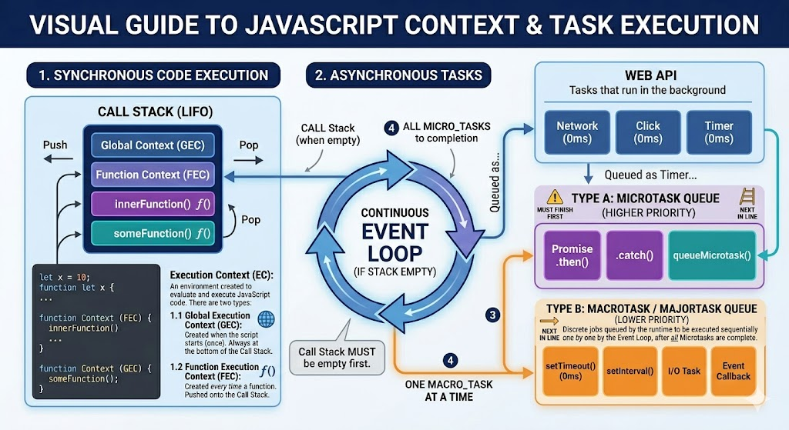
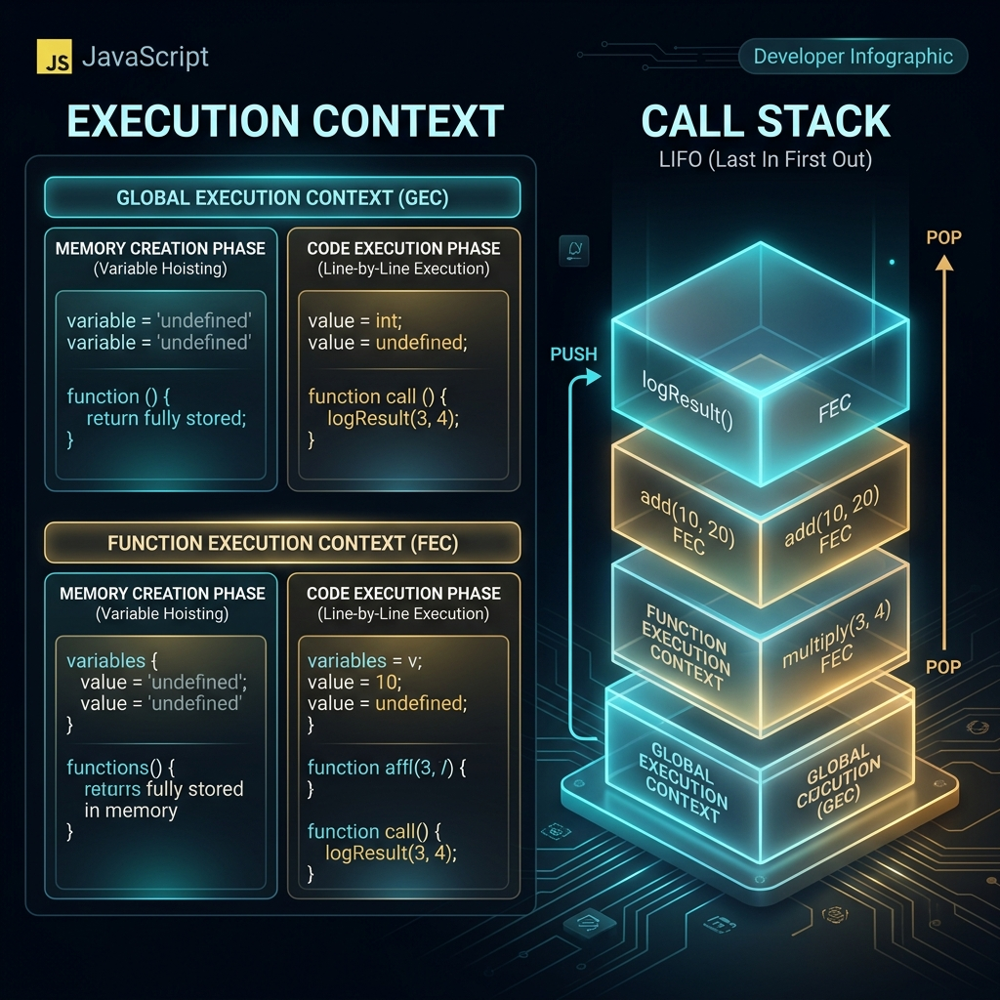

Web Dev-II Question Bank
Extensive, complete solutions for the official 35 exam questions directly from the WEB DEV-II Question Bank PDF.
The Document Object Model (DOM) is a standardized programming interface for HTML and XML documents. It represents the structure of a web document as a hierarchical tree of nodes, where each node is an object representing a part of the document (such as elements, attributes, or text content).
Role in Web Development:
- Programmable Interface: Acts as a bridge between static HTML web pages and scripting languages like JavaScript.
- Dynamic Updates: Enables developers to dynamically read, create, modify, or delete HTML element nodes, attributes, and styles on the fly.
- Event Binding: Allows attaching event listeners to elements to handle user interactions (e.g., clicks, text inputs, form submissions) without requiring page reloads.
While HTML and the DOM are closely related, they represent different states of a web document:
| Feature | HTML (HyperText Markup Language) | DOM (Document Object Model) |
|---|---|---|
| Definition | A text-based markup language representing the static initial source code. | An in-memory object tree representation of the active web document. |
| State | Static; remains unchanged as sent by the server. | Dynamic; constantly updated in response to JavaScript mutations. |
| Format | A plain text string of tags (e.g., <div></div>). |
A hierarchical tree structure of JavaScript objects and nodes. |
| Source | Viewable via "View Page Source" in browsers. | Viewable and inspectable via the browser's "Inspect Element" tool. |
The three main node properties differ in how they retrieve or parse content inside DOM elements:
innerHTML: Gets or sets the full HTML markup contents inside an element. It parses HTML tags, allowing you to insert formatted elements. However, it represents a security risk (Cross-Site Scripting - XSS) and triggers full parser runs.textContent: Gets or sets the raw, unformatted text content of a node and all of its descendants, including hidden elements (like<script>and<style>blocks). It does not parse HTML tags and is highly performant.innerText: Gets or sets the visible text content of a DOM element. It respects CSS styling (e.g., does not return text hidden withdisplay: noneorvisibility: hidden) and automatically triggers layout reflows, making it slightly slower than textContent.
// Example Element: <div id="test">Hello <span style="display:none">World</span></div>
console.log(el.innerHTML); // Output: "Hello <span style="display:none">World</span>"
console.log(el.textContent); // Output: "Hello World" (returns hidden text)
console.log(el.innerText); // Output: "Hello " (excludes hidden text)A breakdown of the primary selector methods in native JavaScript:
| Method | Selector Style | Return Type | Live vs Static |
|---|---|---|---|
getElementById() |
String ID (e.g., "btn"). |
A single matching element object, or null. |
N/A (Single item) |
getElementsByClassName() |
String class name (e.g., "active"). |
A live HTMLCollection of elements. |
Live (automatically updates on DOM changes). |
querySelector() |
CSS selector (e.g., "#btn", ".item > a"). |
The first matching element object, or null. |
N/A (Single item) |
querySelectorAll() |
CSS selector (e.g., ".item"). |
A static NodeList of all matching elements. |
Static (does not update automatically, supports .forEach()). |
The classList property returns the class names of an element as a DOMTokenList, providing a clean API to manipulate CSS classes without directly rewriting the className string:
add("className"): Adds one or more classes to the element. If a class already exists, it is ignored and not duplicated.element.classList.add("active", "visible");remove("className"): Removes one or more classes from the element. If a class is not present, no error is thrown.element.classList.remove("hidden");toggle("className"): Toggles a class. If the class exists, it is deleted and returnsfalse; if the class is missing, it is appended and returnstrue.element.classList.toggle("dark-mode");
JavaScript processes asynchronous code using two distinct queues with different execution priorities:
- Microtask Queue: Holds high-priority callback operations that must execute immediately after the current synchronous script finishes executing, and before the browser renders the page.
Examples:Promise.prototype.then()/catch()/finally(),queueMicrotask(),MutationObserver. - Macrotask Queue (Callback Queue): Holds standard asynchronous callback operations executed one-by-one in subsequent loops of the event loop.
Examples:setTimeout(),setInterval(), file I/O operations, native user event listeners (clicks, changes).
Execution Rule: The Event Loop processes the Call Stack first. Once the Call Stack is empty, it executes all microtasks in the Microtask Queue until it is completely drained, before moving on to fetch and execute **one single** task from the Macrotask Queue.
Both are native browser timers, but they differ in how frequently they execute their callbacks:
setTimeout(callback, delay): Executes the callback function **exactly once** after the specified delay (in milliseconds) has elapsed.
Cancellation: Returns a timer ID which can be halted usingclearTimeout(id)before execution.setInterval(callback, interval): Executes the callback function **repeatedly at fixed intervals** of the specified delay.
Cancellation: Returns an interval ID which must be explicitly stopped usingclearInterval(id)to prevent memory leaks.
// Runs once after 2 seconds
const timerId = setTimeout(() => console.log("Hello"), 2000);
clearTimeout(timerId); // Cancels the execution
// Repeats every 1 second
const intervalId = setInterval(() => console.log("Tick"), 1000);
clearInterval(intervalId); // Stops the repetitionCallback Hell (also known as the "Pyramid of Doom") is a situation in JavaScript where multiple nested callback functions are passed as arguments to handle sequential asynchronous operations, causing the code structure to grow horizontally rather than vertically.
Disadvantages:
- Poor Readability: Code nesting makes it extremely difficult to parse and read the execution flow.
- Complex Error Handling: Error tracking is highly redundant and complex, requiring separate error checks or try-catch blocks at every level of the pyramid.
- Tight Coupling: Highly nested callbacks become highly interdependent, making restructuring, debugging, and refactoring extremely error-prone.
A Promise is a placeholder object representing the eventual success or failure of an asynchronous operation. It has three mutually exclusive states:
- 1. Pending: The initial, active state of the Promise. The asynchronous operation has started but has not resolved or rejected yet.
- 2. Fulfilled (Resolved): The asynchronous operation completed successfully. The Promise's
.then()handlers are immediately queued with the resolved value. - 3. Rejected: The asynchronous operation failed. The Promise's
.catch()handlers are immediately queued with the error/rejection reason.
Immutability Rule: Once a Promise transitions from Pending to either Fulfilled or Rejected, it becomes settled and its state is completely immutable—it can never change again.
JavaScript is a **single-threaded** language, executing one operation at a time on its Call Stack. To handle blocking tasks (timers, network requests) without freezing the UI, it delegates operations to the browser's Web APIs.
Asynchronous Execution Steps:
- Asynchronous statements (e.g.,
setTimeout) are pushed onto the Call Stack. - The engine offloads the task to the **Web APIs** and pops the statement off the Call Stack immediately.
- Once the Web API timer or request completes, it pushes its callback function onto the appropriate queue (Microtask or Macrotask Queue).
- The **Event Loop** continuously checks if the Call Stack is empty.
- Once the Call Stack is completely clear of synchronous code, the Event Loop drains the Microtask Queue entirely.
- Finally, it pulls the first task from the Macrotask Queue and pushes it onto the Call Stack for execution.
JSX stands for JavaScript XML. It is a syntax extension for JavaScript used in React to describe what the user interface should look like in a highly readable, HTML-like structure.
Key Facts:
- Not HTML: Web browsers cannot parse JSX directly because it is not standard JavaScript.
- Babel Transpilation: Babel compiles JSX elements into standard browser-native
React.createElement()function calls before execution.
// JSX Written in code
const element = <h1 class="title">Hello</h1>;
// Transpiled by Babel to standard JavaScript
const element = React.createElement("h1", null, "Hello");One-way data binding is a data flow model where data in a React application travels in a single, unidirectional path: from parent components down to child components through read-only props.
Key Principles:
- Read-only Props: Child components cannot directly modify the props they receive from a parent.
- State Updates: To update parent state, child components must invoke callback functions passed down as props by the parent.
- Benefits: Makes application state predictable, simplifies tracking data flows, and significantly eases debugging compared to two-way data binding models.
Hooks are special native functions introduced in React 16.8 that allow functional components to utilize state, lifecycle methods, and other React features without writing class components.
Crucial Rules of Hooks:
- Only call Hooks at the top level: Do not call hooks inside loops, conditional statements, nested functions, or try-catch blocks. This ensures that hooks are called in the exact same order on every component render.
- Only call Hooks from React functions: You must call hooks only from React functional components or custom hooks, never from standard JavaScript functions.
The useState hook allows functional components to declare and manage local state variables. It takes an initial state value as an argument and returns an array containing exactly two elements: the current state value, and a setter function to update it.
Implementation Example:
import React, { useState } from 'react';
function ToggleButton() {
// 1. Declare state variable 'isOn' and setter function 'setIsOn'
const [isOn, setIsOn] = useState(false);
return (
<button onClick={() => setIsOn(!isOn)}>
Status: {isOn ? "ON" : "OFF"}
</button>
);
}Props (Properties) are read-only configuration inputs passed from a parent component down to a child component, behaving exactly like function arguments in standard programming.
Key Rule: Props are strictly **read-only (immutable)**; a child component must never attempt to modify the props it receives.
Implementation Use Case:
import React from 'react';
// 1. Child Component receiving props
function Greeting(props) {
return <h1>Hello, {props.username}!</h1>;
}
// 2. Parent Component passing props
export default function App() {
return (
<div>
<Greeting username="Alice" />
<Greeting username="Bob" />
</div>
);
}Both are HTML5 Web Storage APIs that store string key-value pairs directly in the web browser, but they differ in data persistence rules:
- Local Storage:
- Persistence: Data persists indefinitely with no expiration. It remains intact even when browser tabs or the entire application are closed.
- Clearance: Only cleared explicitly via JavaScript (localStorage.clear()) or manually by clearing browser cookies and cache.
- Capacity: ~5MB-10MB. - Session Storage:
- Persistence: Data persists only for the duration of the page session.
- Clearance: Automatically and immediately wiped clean as soon as the specific browser tab or window is closed.
- Capacity: ~5MB.
Babel is a widely used, open-source JavaScript compiler and transpiler. Its primary roles in web development include:
- Syntax Transpilation: Converts modern ECMAScript 2015+ (ES6+) syntax features (like arrow functions, classes, spread operators, const/let) into backward-compatible ES5 code that older browsers (e.g., Internet Explorer) can execute without throwing errors.
- JSX Compilation: Compiles React JSX syntax elements into standard, nested browser-native
React.createElement()function calls. - Polyfilling: Injects polyfills to replicate missing built-in global objects or methods (like
PromiseorArray.from) in older environments.
React manages frequent UI updates efficiently using the **Virtual DOM (VDOM)** and the **Reconciliation** (diffing) algorithm:
- Instead of modifying the heavy, slow browser Real DOM directly on every state change, React creates a lightweight virtual copy of the DOM in memory.
- When a component's state or props change, React generates a new Virtual DOM tree.
- It compares this new tree with the previous Virtual DOM tree using its **Diffing Algorithm** (a process called Reconciliation) to determine the exact minimum set of changes.
- Finally, React batches all these updates together and applies only the specific changed nodes to the Real DOM in a single highly optimized transaction.
The dependency array is the second argument passed to the useEffect(callback, dependencies) hook. It controls when the hook's side-effect callback executes:
- No dependency array provided: The callback runs after **every single render** of the component.
useEffect(() => { console.log("Runs after every render!"); }); - Empty dependency array
[]: The callback runs **exactly once** after the initial render (mounting), acting likecomponentDidMount.useEffect(() => { console.log("Runs once on mount"); }, []); - With dependencies
[state, prop]: The callback runs on mount, and then **only when one or more of the specified values change** between renders.useEffect(() => { console.log("Runs when count changes!"); }, [count]);
Prop drilling is the process of passing down state variables as props from a high-level parent component through multiple intermediate children that do not actually need the data, simply to deliver it to a deeply nested child.
Major Disadvantages:
- Code Bloat and Clutter: Intermediate components are forced to declare, receive, and pass along irrelevant props, bloating the code base.
- Tight Coupling: Components become rigidly dependent on their current layout hierarchy, making it highly difficult to extract, relocate, or reuse individual components.
- Maintenance Barriers: Changing prop structures or data types requires tedious and error-prone updates across dozens of intermediate files.
Event handling is the core mechanism that enables interactivity on web pages. The modern, standard approach in native JavaScript is element.addEventListener(event, callback, useCapture).
Key Advantages: Supports attaching multiple listeners for a single event on the same DOM node, operates on any element, and enables clean event removal using removeEventListener.
Exhaustive Program Code illustrating click, change, submit, mouseover, and mouseout:
<!DOCTYPE html>
<html>
<head>
<style>
.box { width: 100px; height: 100px; background: #3b82f6; transition: background 0.3s; margin-top: 10px; }
.box.active { background: #10b981; }
</style>
</head>
<body>
<button id="btn">Click Me</button>
<input type="text" id="username" placeholder="Type text...">
<form id="myForm" style="margin-top: 10px;">
<button type="submit">Submit Form</button>
</form>
<div id="box" class="box"></div>
<script>
// 1. Select the DOM elements
const btn = document.getElementById("btn");
const input = document.getElementById("username");
const form = document.getElementById("myForm");
const box = document.getElementById("box");
// 2. Click event: alerts when clicked
btn.addEventListener("click", function(e) {
alert("Button was clicked! Event type: " + e.type);
});
// 3. Change event: fires when value changes and focus leaves input
input.addEventListener("change", function(e) {
console.log("Input changed value to: " + e.target.value);
});
// 4. Mouseover and Mouseout events to dynamically switch CSS classes
box.addEventListener("mouseover", function() {
box.classList.add("active");
});
box.addEventListener("mouseout", function() {
box.classList.remove("active");
});
// 5. Submit event: handles form action, preventing page refresh
form.addEventListener("submit", function(e) {
e.preventDefault(); // Prevents default form refresh
console.log("Form submission caught and prevented successfully!");
});
</script>
</body>
</html>Event Propagation is the lifecycle protocol describing how browser engines dispatch user events through nested DOM hierarchies.
The Three Phases of Event Propagation:
- Capturing (Trickling) Phase: The event travels downwards from the top-most
windowobject, through intermediate parents, until it reaches the parent immediately above the targeted element. Registered by setting the third parameter ofaddEventListenertotrue. - Target Phase: The event reaches the targeted element that initiated the interaction.
- Bubbling Phase: The event travels upwards from the targeted element back up the DOM hierarchy to the
window. This is the default browser mechanism.
Diagrammatic Flow:
[Window] (1. Capturing starts here, 3. Bubbling ends here)
↓ ↑
[Body]
↓ ↑
[Div Container]
↓ ↑
[Button Target] (2. Target Phase)Differentiating Bubbling vs Capturing:
| Feature | Event Bubbling | Event Capturing |
|---|---|---|
| Direction | Travels upwards: Target ➔ Parents ➔ Window | Travels downwards: Window ➔ Parents ➔ Target |
| Default State | Yes, this is the default browser behavior. | No, must be explicitly enabled. |
| Registration | el.addEventListener(ev, cb, false) | el.addEventListener(ev, cb, true) |
| Halt Flow | Use e.stopPropagation() inside handlers. | Use e.stopPropagation() inside handlers. |
Role of Event Listeners: Act as registered observers waiting for a specific event type on a targeted node to execute handler logic. They allow a clean separation between HTML structural views and controller JavaScript logic, supporting multi-handler attachments to single DOM nodes.
To dynamically detach or remove an event listener, you must use a **named function reference** during both attachment (addEventListener) and removal (removeEventListener). Anonymous callback functions cannot be targeted for removal.
Full, complete, copy-pasteable functional program:
<!DOCTYPE html>
<html>
<head>
<style>
body { font-family: 'Segoe UI', sans-serif; text-align: center; padding: 50px; background: #0f172a; color: white; }
.btn { padding: 12px 24px; font-size: 16px; font-weight: bold; background: #3b82f6; border: none; color: white; border-radius: 6px; cursor: pointer; transition: 0.3s; }
.btn:hover { background: #2563eb; }
.btn.disabled { background: #475569; cursor: not-allowed; }
#message { font-size: 24px; margin-top: 25px; transition: color 0.3s; }
</style>
</head>
<body>
<h1>Event Listener Removal Demo</h1>
<p id="message">Initial Static Heading</p>
<button id="actionBtn" class="btn">Click to Mutate</button>
<script>
const btn = document.getElementById("actionBtn");
const msg = document.getElementById("message");
// 1. Define the named callback function
function handleFirstClick() {
// Mutate the heading text and color
msg.textContent = "Text mutated dynamically! Event listener now completely removed.";
msg.style.color = "#fbbf24"; // Change text color to gold
// Update button visual state
btn.classList.add("disabled");
btn.textContent = "Handler Removed";
// 2. Remove the event listener immediately after single execution
btn.removeEventListener("click", handleFirstClick);
}
// 3. Attach the event listener using named reference
btn.addEventListener("click", handleFirstClick);
</script>
</body>
</html>Execution Context is the conceptual environment created by JavaScript engines to evaluate and run code.
Types of Execution Contexts:
- Global Execution Context (GEC): Created automatically when a script starts. It manages global variables, global scope, and sets the
thisbinding to the window object. Only one GEC exists per execution. - Function Execution Context (FEC): Created on-demand **every single time** a function is invoked. Each function call gets its own private context.
The Two Phases of Execution Context:
- Memory Creation Phase: The engine scans the code and hoists variables (initialized as
undefined) and full function declarations to the top of their respective scopes. - Code Execution Phase: Evaluates expressions, assigns values to variables, and executes statements line-by-line.
The Call Stack (LIFO): A stack data structure that tracks active execution contexts. GEC remains at the bottom. When a function is called, its FEC is pushed to the top of the stack. When execution completes, the function is popped off the stack, and execution resumes in the context below it.
Call Stack Stages:
[1. Start] ➔ [2. main()] ➔ [3. first()] ➔ [4. second()] ➔ [5. Pop out]
┌─────────┐ ┌─────────┐ ┌─────────┐ ┌───────────┐ ┌─────────┐
│ │ │ │ │ │ │ second() │ │ │
│ │ │ │ │ first() │ │ first() │ │ first() │
│ │ │ main() │ │ main() │ │ main() │ │ main() │
│ GEC │ │ GEC │ │ GEC │ │ GEC │ │ GEC │
└─────────┘ └─────────┘ └─────────┘ └───────────┘ └─────────┘1. Problem of Callback Hell: When handling nested asynchronous operations, code grows horizontally, making read/write operations difficult, error tracking complex, and refactoring virtually impossible.
2. Definition of Promise: An object representing the eventual completion or failure of an asynchronous operation, serving as a placeholder for a future value.
3. States: Mutual exclusive states (Pending, Fulfilled, Rejected).
4. Consumers:
.then(value => {}): Triggered on success..catch(error => {}): Handles errors/rejections..finally(() => {}): Runs regardless of resolution state.
5. Implementation Example:
// Function returning a Promise simulating delayed API fetch
function fetchUserData(userId) {
return new Promise((resolve, reject) => {
console.log("Fetching user...");
setTimeout(() => {
if (userId > 0) {
resolve({ id: userId, username: "Bret" }); // Fulfilled state
} else {
reject("Invalid User ID!"); // Rejected state
}
}, 2000);
});
}
// Consuming the Promise
fetchUserData(123)
.then(data => {
console.log("Success:", data);
})
.catch(err => {
console.error("Error occurred:", err);
})
.finally(() => {
console.log("Operation Complete.");
});Async/await is syntactic sugar built on top of JavaScript Promises, making asynchronous code read sequentially exactly like flat, synchronous code.
Key Rules:
- The
asynckeyword makes a function return a Promise automatically. - The
awaitkeyword pauses function execution until the target Promise resolves or rejects. It can only be used insideasyncfunctions.
Full complete code showing try-catch error handling:
function fetchSimulatedAPI(url) {
return new Promise((resolve, reject) => {
setTimeout(() => {
if (url.includes("success")) {
resolve({ status: 200, data: "API User List" });
} else {
reject(new Error("404 Not Found!"));
}
}, 1500);
});
}
async function getWebResources() {
try {
console.log("Initiating request...");
// Await standard resolving promise
const result = await fetchSimulatedAPI("http://api.com/success");
console.log("Response resolved successfully:", result.data);
console.log("Initiating bad request...");
// Await rejecting promise (will throw error into catch block)
const badResult = await fetchSimulatedAPI("http://api.com/failure");
console.log("This line will not run", badResult);
} catch (error) {
console.error("Caught error in try...catch block:", error.message);
} finally {
console.log("Async transaction finished.");
}
}
getWebResources();To fetch API data in a functional React component, we perform the fetch inside a useEffect hook with an empty dependency array [] (so it runs once on mount) and store the fetched list in state using useState.
Full, complete React implementation component:
import React, { useState, useEffect } from 'react';
function UserList() {
// State to store users, errors, and loading statuses
const [users, setUsers] = useState([]);
const [loading, setLoading] = useState(true);
const [error, setError] = useState(null);
useEffect(() => {
// Define async fetch function
const loadData = async () => {
try {
const response = await fetch("https://jsonplaceholder.typicode.com/users");
if (!response.ok) {
throw new Error("HTTP request failed with status: " + response.status);
}
const data = await response.json();
setUsers(data); // Store data in state
} catch (err) {
setError(err.message);
} finally {
setLoading(false); // Disable loading spinner
}
};
loadData();
}, []); class="cm">// Empty dependency array ensures it runs once on mount
if (loading) return <h2>Loading users list from API...</h2>;
if (error) return <h2 style={{ color: 'red' }}>Error: {error}</h2>;
return (
<div style={{ padding: '20px', fontFamily: 'sans-serif' }}>
<h1>API User Database</h1>
<ul style={{ listStyleType: 'none', padding: 0 }}>
{users.map(user => (
<li key={user.id} style={{ padding: '10px', borderBottom: '1px solid #ccc', margin: class="str">'5px 0' }}>
<strong>Username:</strong> {user.username} | <strong>Email:</strong> {user.email}
</li>
))}
</ul>
</div>
);
}
export default UserList;React Class components utilize lifecycle methods to execute code at specific execution points. React functional components replace them entirely using the **useEffect** hook.
Lifecycle Mapping:
- ComponentDidMount (Mounting): Runs once after component renders on screen. Mapped to
useEffect(cb, [])(empty array). - ComponentDidUpdate (Updating): Runs on state or prop changes. Mapped to
useEffect(cb, [stateName])(runs only when state changes). - ComponentWillUnmount (Unmounting/Cleanup): Runs right before component is removed. Mapped by returning a **cleanup function** inside the
useEffectcallback.
Exhaustive example demonstrating all three behaviors:
import React, { useState, useEffect } from 'react';
function LifecycleDemo() {
const [count, setCount] = useState(0);
// 1. componentDidMount + componentDidUpdate (combined)
useEffect(() => {
console.log("Runs on Mount AND on every single render!");
});
// 2. componentDidMount (Runs once on mount)
useEffect(() => {
console.log("componentDidMount: Runs ONLY once after initial mount!");
// 3. componentWillUnmount (Cleanup returned inside callback)
return () => {
console.log("componentWillUnmount: Cleanup logic runs right before unmount!");
};
}, []); class="cm">// Empty array!
// 4. componentDidUpdate (Fires specifically when count changes)
useEffect(() => {
console.log(`componentDidUpdate: Count value updated to: ${count}`);
}, [count]); class="cm">// Dependency array contains 'count'
return (
<div>
<p>Counter: {count}</p>
<button onClick={() => setCount(count + 1)}>Increment</button>
</div>
);
}We use `useState` to store the counter and a secondary flag state. A `useEffect` hook triggers the popup, targeted strictly by adding the popup state to its dependency array.
Full, complete code:
import React, { useState, useEffect } from 'react';
function InteractiveCounter() {
const [count, setCount] = useState(0);
const [triggerPopup, setTriggerPopup] = useState(false);
// useEffect triggered ONLY when triggerPopup updates to true
useEffect(() => {
if (triggerPopup) {
alert(`Counter updated to ${count}! Showing popup alert.`);
setTriggerPopup(false); // Reset popup trigger back to false
}
}, [triggerPopup]); class="cm">// Dependency array contains only triggerPopup!
const handleButtonOneClick = () => {
// Increment counter AND queue popup trigger
setCount(prev => prev + 1);
setTriggerPopup(true);
};
const handleButtonTwoClick = () => {
// Increment counter silently
setCount(prev => prev + 1);
};
return (
<div style={{ textAlign: 'center', padding: '30px', fontFamily: 'sans-serif' }}>
<h1>Interactive Counter: {count}</h1>
<button onClick={handleButtonOneClick} style={{ padding: '10px 20px', margin: '5px', background: '#e11d48', color: 'white', border: 'none', borderRadius: '4px', cursor: 'pointer' }}>
Button 1: Increment & Alert
</button>
<button onClick={handleButtonTwoClick} style={{ padding: '10px 20px', margin: '5px', background: '#2563eb', color: 'white', border: 'none', borderRadius: '4px', cursor: 'pointer' }}>
Button 2: Increment Silently
</button>
</div>
);
}
export default InteractiveCounter;We implement a controlled React Form by maintaining state variables for each field, updating states via `onChange` events, preventing default submit behavior, and rendering the stored data card on successful submission.
Full, complete code:
import React, { useState } from 'react';
function UserForm() {
// Form field states
const [name, setName] = useState("");
const [age, setAge] = useState("");
const [gender, setGender] = useState("Male");
const [languages, setLanguages] = useState([]);
// State to store submitted data
const [submittedData, setSubmittedData] = useState(null);
// Language checkbox handler
const handleLanguageChange = (e) => {
const { value, checked } = e.target;
if (checked) {
setLanguages([...languages, value]);
} else {
setLanguages(languages.filter(lang => lang !== value));
}
};
const handleSubmit = (e) => {
e.preventDefault(); // Stop page reload
// Form validation
if (!name || !age) {
alert("Please complete Name and Age fields!");
return;
}
// Save data in object
setSubmittedData({
name,
age,
gender,
languages
});
};
return (
<div style={{ padding: '35px', maxWidth: '500px', margin: class="str">'0 auto', fontFamily: 'sans-serif' }}>
<h2>User Registration Portal</h2>
<form onSubmit={handleSubmit} style={{ background: '#f3f4f6', padding: '20px', borderRadius: '8px' }}>
<div style={{ marginBottom: '15px' }}>
<label style={{ display: 'block', fontWeight: 'bold' }}>Name:</label>
<input type="text" value={name} onChange={(e) => setName(e.target.value)} style={{ width: class="str">'90%', padding: '8px', marginTop: '5px' }} />
</div>
<div style={{ marginBottom: '15px' }}>
<label style={{ display: 'block', fontWeight: 'bold' }}>Age:</label>
<input type="number" value={age} onChange={(e) => setAge(e.target.value)} style={{ width: class="str">'90%', padding: '8px', marginTop: '5px' }} />
</div>
<div style={{ marginBottom: '15px' }}>
<label style={{ display: 'block', fontWeight: 'bold' }}>Gender:</label>
<select value={gender} onChange={(e) => setGender(e.target.value)} style={{ width: class="str">'95%', padding: '8px', marginTop: '5px' }}>
<option value="Male">Male</option>
<option value="Female">Female</option>
<option value="Other">Other</option>
</select>
</div>
<div style={{ marginBottom: '15px' }}>
<label style={{ display: 'block', fontWeight: 'bold' }}>Languages Known:</label>
<label><input type="checkbox" value="JavaScript" checked={languages.includes("JavaScript")} onChange={handleLanguageChange} /> JavaScript </label>
<label><input type="checkbox" value="HTML" checked={languages.includes("HTML")} onChange={handleLanguageChange} /> HTML </label>
<label><input type="checkbox" value="CSS" checked={languages.includes("CSS")} onChange={handleLanguageChange} /> CSS </label>
</div>
<button type="submit" style={{ background: class="str">'#059669', color: 'white', padding: '10px 20px', border: 'none', borderRadius: '4px', cursor: 'pointer', width: class="str">'100%' }}>
Register User
</button>
</form>
{submittedData && (
<div style={{ marginTop: '25px', background: '#d1fae5', border: '2px solid #34d399', padding: '20px', borderRadius: '8px' }}>
<h3>✅ Database Registered Success</h3>
<p><strong>Name:</strong> {submittedData.name}</p>
<p><strong>Age:</strong> {submittedData.age}</p>
<p><strong>Gender:</strong> {submittedData.gender}</p>
<p><strong>Languages:</strong> {submittedData.languages.join(', ') || "None"}</p>
</div>
)}
</div>
);
}
export default UserForm;The useState hook manages numerical variables efficiently and handles re-rendering when state values are modified.
Full, complete code:
import React, { useState } from 'react';
function CounterApp() {
const [count, setCount] = useState(0);
return (
<div style={{ textAlign: 'center', padding: '40px', fontFamily: 'sans-serif', background: '#0f172a', color: '#fff', borderRadius: '10px', maxWidth: '300px', margin: '20px auto' }}>
<h2>Simple Counter</h2>
<h1 style={{ fontSize: '48px', margin: class="str">'20px 0', color: '#38bdf8' }}>{count}</h1>
<div style={{ display: 'flex', justifyContent: 'center', gap: '10px' }}>
<button onClick={() => setCount(count + 1)} style={{ padding: '10px 15px', background: '#22c55e', border: 'none', color: 'white', borderRadius: '4px', cursor: 'pointer', fontWeight: 'bold' }}>
+1
</button>
<button onClick={() => setCount(prev => (prev > 0 ? prev - 1 : 0))} style={{ padding: '10px 15px', background: '#ef4444', border: 'none', color: 'white', borderRadius: '4px', cursor: 'pointer', fontWeight: 'bold' }}>
-1
</button>
<button onClick={() => setCount(0)} style={{ padding: '10px 15px', background: '#64748b', border: 'none', color: 'white', borderRadius: '4px', cursor: 'pointer', fontWeight: 'bold' }}>
RESET
</button>
</div>
</div>
);
}
export default CounterApp;The Context API is React's built-in feature designed to establish global state environments, sharing data across any nested children directly without acting as intermediate prop brokers.
Comparison Table:
| Metric | Prop Drilling | Context API |
|---|---|---|
| Mechanism | Passes data manually through every child level. | Exposes global state via a Context Provider channel. |
| Code Quality | Bloats middle components with unused parameters. | Keeps middle components clean and focused. |
| Maintenance | High coupling makes restructuring complex. | Subscribers access state directly via useContext. |
Full nested component implementation:
import React, { createContext, useContext, useState } from 'react';
// 1. Initialize Context
const ThemeContext = createContext();
// Parent Provider Component
export function ThemeProvider({ children }) {
const [theme, setTheme] = useState("dark");
return (
<ThemeContext.Provider value={{ theme, setTheme }}>
<div style={{ background: theme === 'dark' ? '#0f172a' : '#fff', color: theme === 'dark' ? '#fff' : class="str">'#000', padding: '20px' }}>
{children}
</div>
</ThemeContext.Provider>
);
}
// Middle Component (does NOT receive theme props!)
function LayoutPanel() {
return (
<div>
<h3>Middle Component (Uncluttered)</h3>
<NestedButton />
</div>
);
}
// Deeply Nested Consumer Component
function NestedButton() {
// 2. Consume context values directly
const { theme, setTheme } = useContext(ThemeContext);
return (
<div>
<p>Theme from Global Context: <strong>{theme.toUpperCase()}</strong></p>
<button onClick={() => setTheme(theme === 'dark' ? 'light' : 'dark')} style={{ padding: '8px 16px', cursor: 'pointer' }}>
Toggle Theme
</button>
</div>
);
}
export default function App() {
return (
<ThemeProvider>
<LayoutPanel />
</ThemeProvider>
);
}1. Prop Drilling Disadvantages:
- Code Bloat: Intermediate components are forced to declare, receive, and pass along unused props, bloating the code base.
- Tight Coupling: Components become rigidly dependent on their current layout hierarchy, making it highly difficult to extract, relocate, or reuse individual components.
- Maintenance Barriers: Changing prop structures or data types requires tedious and error-prone updates across dozens of intermediate files.
2. Context API Solution:
- Context defines a Provider that acts as a broadcast channel.
- Any nested child can tap in using the
useContexthook to access values. - Intermediate components are completely untouched, keeping them clean, focused, and fully reusable!
Routing is the mechanism that enables rendering of different views/components based on URL paths without triggering page reloads, maintaining the single-page application (SPA) model. React uses react-router-dom for this.
Key Components:
BrowserRouter: Context provider wrapping the app.Routes: Grouping container for Route matchings.Route: Maps a URL path to a component element.Link: Custom anchor tag that modifies the client URL without firing server requests.useNavigate: Programmatic navigation trigger.
Full functional routing example:
import React from 'react';
import { BrowserRouter, Routes, Route, Link, useNavigate } from 'react-router-dom';
function Home() {
const navigate = useNavigate();
return (
<div>
<h1>Home Portal</h1>
<button onClick={() => navigate('/dashboard')} style={{ padding: '10px 20px', cursor: 'pointer' }}>
Navigate to Dashboard Programmatically ➔
</button>
</div>
);
}
function Dashboard() {
return <h1>Dashboard View: User Analytics Loaded</h1>;
}
export default function App() {
return (
<BrowserRouter>
<nav style={{ padding: '10px', background: '#eee', marginBottom: '20px' }}>
<Link to="/" style={{ marginRight: '15px', textDecoration: 'none', fontWeight: 'bold' }}>Home</Link>
<Link to="/dashboard" style={{ textDecoration: 'none', fontWeight: 'bold' }}>Dashboard</Link>
</nav>
<Routes>
<Route path="/" element={<Home />} />
<Route path="/dashboard" element={<Dashboard />} />
</Routes>
</div>
);
}console.log("Start");
async function test() {
console.log("Inside function");
await Promise.resolve();
console.log("After await");
}
test();
setTimeout(() => {
console.log("Timeout");
}, 0);
console.log("End");Start
Inside function
End
After await
Timeout
Step-by-Step Execution Tracing:
console.log("Start")is synchronous. **Prints "Start"**.test()is called:
-console.log("Inside function")runs synchronously. **Prints "Inside function"**.
- The code reachesawait Promise.resolve(). Theawaitkeyword pauses the async function execution, scheduling the remainder oftest()as a microtask in the **Microtask Queue**.setTimeoutschedules its callback in the **Macrotask Queue** with a 0ms delay.console.log("End")runs synchronously. **Prints "End"**.- The call stack is now empty. The Event Loop prioritizes the **Microtask Queue** and resumes
test(). **Prints "After await"**. - With microtasks cleared, the Event Loop processes the next **Macrotask** (
setTimeout). **Prints "Timeout"**.
JavaScript & DOM Programming
Short Answer [2 Marks] & Long Answer [8 Marks] comprehensive questions on Core JS, Async, and DOM Manipulation.
HTML (HyperText Markup Language) is the raw static text markup written in a file representing the layout structure of a page.
DOM (Document Object Model) is the live, dynamic object representation of that HTML stored in the browser's memory, which JavaScript can query and modify dynamically at runtime.
| HTML | DOM |
|---|---|
| Static text file source code. | Live object tree in browser memory. |
| Cannot be modified dynamically. | Can be modified dynamically by JS. |
The Document Object Model (DOM) is an API for HTML/XML documents. It defines the logical structure of documents and the way a document is accessed and manipulated. Its role is to bridge the gap between static HTML web layouts and dynamic languages like JavaScript, enabling features like interactive user interfaces, animations, and asynchronous content updates without page reloads.
The **DOM Tree Structure** is a hierarchical representation of a webpage where every HTML element, attribute, and text snippet is modeled as a **Node**. The root node of the tree is the `document` object. Under it lies the `html` element node, which branches into `head` and `body` child nodes, which contain further nested element, attribute, and text nodes.
GEC (document)
└── <html>
├── <head> ➔ <title> ➔ [Text Node]
└── <body> ➔ <div> ➔ <p> ➔ [Text Node]getElementById() and getElementsByClassName().
getElementById(id): Queries the DOM for a single matching element with the specified unique `id` attribute. Returns a single DOM element object (or `null` if none found). Extremely fast.getElementsByClassName(className): Queries the DOM for all elements matching the given CSS `class` attribute. Returns a **live HTMLCollection** of all matching element nodes (not a standard array).
const title = document.getElementById("main-title"); // Single element
const items = document.getElementsByClassName("menu-item"); // HTMLCollectionA **callback function** is a function passed into another function as an argument, which is then executed inside the outer function to perform a task.
Drawbacks:
- **Callback Hell / Pyramid of Doom**: Nesting multiple asynchronous callbacks creates hard-to-read, nested indentation structures.
- **Inversion of Control**: Trusting a third-party function to call your callback correctly, at the right time, and with correct parameters.
- **Complex Error Handling**: Hard to track and bubbles errors up manually at each nested layer.
Event Propagation is the process that defines how events travel through the DOM tree to target elements and back up. It occurs in three distinct phases:
- **Capturing Phase**: Event moves down from the root (`window`) to the target element.
- **Target Phase**: Event triggers directly on the target element.
- **Bubbling Phase**: Event bubbles back up from the target element to the root (default behavior).
| Event Bubbling (Default) | Event Capturing (Trickling) |
|---|---|
| Travels upwards from target node ➔ parent nodes ➔ root window. | Travels downwards from root window ➔ child nodes ➔ target. |
| `element.addEventListener('click', handler, false)` | `element.addEventListener('click', handler, true)` |
The **Temporal Dead Zone (TDZ)** is the time window between entering a block scope and the actual line where a `let` or `const` variable is declared. Accessing the variable inside this zone throws a `ReferenceError` because the variable has been hoisted but not initialized.
{
// TDZ starts here
console.log(a); // ❌ ReferenceError: Cannot access 'a' before initialization
let a = 10; // TDZ ends here. 'a' is initialized to 10.
console.log(a); // ✅ Output: 10
}- localStorage: Stores key-value data with no expiration. Survives browser reloads, tab closing, and device reboots.
Use Case: Storing site preference configurations like Dark Mode toggles. - sessionStorage: Stores data only for the duration of the current page session. Cleans up automatically as soon as the tab is closed.
Use Case: Storing multi-step input form progress tokens during checkout.
The `classList` object contains utility methods to easily change HTML class values on elements:
- `add(className)`: Appends class token if not already present.
- `remove(className)`: Deletes class token if present.
- `toggle(className)`: Adds class if missing; deletes class if already present.
const btn = document.querySelector("button");
btn.classList.add("active"); // Adds class
btn.classList.remove("disabled"); // Removes class
btn.classList.toggle("dark"); // Toggles class on/offA **Promise** in JavaScript can exist in one of three mutually exclusive states:
- 🟢 **Pending**: Initial state; the asynchronous operation is still actively running and hasn't settled yet.
- ✅ **Fulfilled**: The operation completed successfully, returning a resolved value (`.then()`).
- ❌ **Rejected**: The operation failed, returning an error reason (`.catch()`).
- Microtask Queue: Holds high-priority asynchronous callbacks (e.g. Promises, `queueMicrotask`, `MutationObserver`). The entire microtask queue is drained fully before the Event Loop moves on to the next render or macrotask.
- Macrotask Queue: Holds lower-priority callbacks (e.g. `setTimeout`, `setInterval`, network requests, UI events). Only one macrotask is processed per event loop tick.
| Feature | var | let | const |
|---|---|---|---|
| Scope | Function or Global | Block Scope `{ }` | Block Scope `{ }` |
| Hoisting | Hoisted as `undefined` | Hoisted but in TDZ | Hoisted but in TDZ |
| Reassignment | Allowed | Allowed | Not Allowed |
- `==` (Loose Equality): Compares values after performing **Type Coercion** (converting data types implicitly if they differ).
- `===` (Strict Equality): Compares both **value** and **type** directly without any coercion. Always recommended to prevent unexpected bugs.
5 == "5" // true (coerced to same type)
5 === "5" // false (number vs string)- `map()`: Creates a new array with the results of calling a function on every element.
- `filter()`: Creates a new array with all elements that pass the conditional test.
- `reduce()`: Runs an accumulator over the elements, returning a single consolidated value.
const nums = [1, 2, 3];
const doubled = nums.map(x => x * 2); // [2, 4, 6]
const evens = nums.filter(x => x % 2 === 0); // [2]
const sum = nums.reduce((acc, x) => acc + x, 0); // 6- String: `slice(start, end)`, `includes(val)`, `split(delimiter)`.
- Object: `Object.keys(obj)`, `Object.values(obj)`, `Object.entries(obj)`.
const user = { name: "Bret", role: "Admin" };
Object.keys(user); // ["name", "role"]
Object.values(user); // ["Bret", "Admin"]- Regular Function: Declared with standard function keyword; binds its own `this`.
- Arrow Function: Lexical `this` binding, compact syntax, not hoisted.
- IIFE: Immediately Invoked Function Expression. Runs as soon as compiled.
- `setTimeout`: Runs a callback function **once** after a delay.
- `setInterval`: Runs a callback function **repeatedly** at set intervals.
- `innerHTML`: Returns or sets the HTML markup content (XSS hazard!).
- `textContent`: Returns or sets raw text inside the element, including hidden stylesheet/script tags.
- `innerText`: Returns or sets clean, human-readable text (CSS-aware, respects hidden status).
const p = document.createElement("p");
p.textContent = "Interactive Element";
document.body.appendChild(p); // Appends paragraph to bodyJavaScript supports a comprehensive set of operators to manipulate data types and variables:
- Arithmetic Operators:
+,-,*,/,%(modulo),**(exponentiation). - Assignment Operators:
=,+=,-=,*=,/=. - Comparison Operators:
==(loose),===(strict),!=,!==,>,<,>=,<=. - Logical Operators:
&&(AND),||(OR),!(NOT). - Bitwise Operators:
&(AND),|(OR),^(XOR),~(NOT),<<(left shift),>>(right shift). - Ternary Operator: Short-hand conditional:
condition ? val1 : val2. - Type Operators:
typeof(returns type string),instanceof(returns boolean verification).
let x = 10;
let isEven = (x % 2 === 0) ? true : false; // Ternary
console.log(typeof x); // "number" (Type Operator)map() vs filter() vs reduce(), map() vs forEach(), find() vs filter(), some() vs every().
A consolidation of key array methods and comparisons:
| Comparison | Method A | Method B | Key Difference |
|---|---|---|---|
| map() vs filter() vs reduce() | map(): Returns new array transforming every element. | filter(): Returns new array with elements matching condition. | reduce(): Accumulates values into a single consolidated output value. |
| map() vs forEach() | map(): Non-mutating, returns a new transformed array. | forEach(): Iterates sequentially, returns undefined (used for side-effects). | map() is chainable; forEach() is not. |
| find() vs filter() | find(): Returns the **first** element that matches. | filter(): Returns an array containing **all** matching elements. | find() returns a single value/undefined; filter() returns an array. |
| some() vs every() | some(): Returns true if **at least one** element passes. | every(): Returns true only if **all** elements pass. | some() halts early on first true; every() halts on first false. |
JavaScript supports several function paradigms depending on scoping and data passing roles:
- Regular Function: Declared with
function; binds its ownthis. - Arrow Function: Lexical
thisbinding, compact expression:const f = () => {}. - First-Class Function: Functions treated as standard variables (passed as arguments, returned, assigned).
- Higher-Order Function: A function that takes another function as an argument or returns a function (e.g.
map()). - Callback Function: A function passed into another to be executed later on operation completion.
- Anonymous Function: A function without a name, typically assigned to variables or passed in callbacks.
- IIFE (Self-Invoking): Immediately Invoked Function Expression:
(function(){})().
// First-Class & Callback
const greet = (name) => `Hello ${name}`; // Arrow / Anonymous
function process(cb, val) { return cb(val); } // Higher-Order
console.log(process(greet, "Alice")); // "Hello Alice"Both use the same triple-dot ... syntax but perform opposite functions:
- Spread Operator: Unpacks or spreads elements of an array/object into individual parameters or elements.
- Rest Parameter: Condenses or groups multiple individual arguments into a single formal array within function definitions.
const nums = [1, 2];
const combined = [...nums, 3]; // Spread: [1, 2, 3]
function sum(...args) { // Rest Parameter
return args.reduce((acc, x) => acc + x, 0);
}??) in JavaScript with examples.
The Nullish Coalescing Operator (??) is a logical operator that returns its right-hand side operand when its left-hand side operand is null or undefined. Otherwise, it returns its left-hand side operand.
Difference from OR (||): The || operator returns the right-hand operand for *any* falsy values (like 0, "", false). The ?? operator protects valid falsy values like 0 or empty strings.
const count = 0;
const val1 = count || 10; // 10 (0 is falsy, triggers fallback)
const val2 = count ?? 10; // 0 (0 is not nullish, returns 0)The major uses of the **Document Object Model (DOM)** include:
- Dynamic styling: Mutating CSS classes and inline styles on user interactions (like hover or clicks).
- Content modification: Updating texts, images, and markups dynamically using `textContent` and `innerHTML`.
- Node structure manipulation: Creating, appending, and deleting HTML elements at runtime.
- Form management: Reading and validating input fields before submissions.
- Event Handling: Registering event observers to respond to clicks, mouse movements, scrolling, and keypresses.
<!DOCTYPE html>
<html>
<head>
<style>
#target { padding: 20px; text-align: center; font-size: 20px; transition: 0.3s; }
</style>
</head>
<body>
<div id="target">Initial Text</div>
<button onclick="changeStyle()">Change DOM</button>
<script>
function changeStyle() {
class="cm">// 1. Select the element
const el = document.getElementById("target");
class="cm">// 2. Change style and text
el.style.backgroundColor = "blue";
el.style.color = "white";
el.textContent = "Hello DOM";
}
</script>
</body>
</html><!DOCTYPE html>
<html>
<body>
<form id="userForm">
<input type="text" id="name" placeholder="Name" required><br>
<input type="number" id="age" placeholder="Age" required><br>
<select id="gender">
<option value="Male">Male</option>
<option value="Female">Female</option>
</select><br>
<button type="submit">Submit</button>
</form>
<script>
document.getElementById("userForm").addEventListener("submit", function(e) {
class="cm">// 1. Prevent default submission page reload
e.preventDefault();
class="cm">// 2. Extract inputs into object
const formData = {
name: document.getElementById("name").value,
age: parseInt(document.getElementById("age").value),
gender: document.getElementById("gender").value
};
class="cm">// 3. Log object to console
console.log("Form Values:", formData);
});
</script>
</body>
</html>getElementsByClassName() and querySelectorAll().
DOM Selectors are specialized functions used to query elements from the HTML DOM tree hierarchy. Major selector APIs include: `getElementById`, `getElementsByClassName`, `getElementsByTagName`, `querySelector`, and `querySelectorAll`.
Key Differences:
| Feature | getElementsByClassName() | querySelectorAll() |
|---|---|---|
| Return value | **HTMLCollection** (Live list, updates on DOM change) | **NodeList** (Static snapshot, does not auto-update) |
| Parameters | Takes a class name string ONLY (e.g. `"item"`) | Takes any CSS selectors combo (e.g. `".card > p:first-child"`) |
| Utility | Does not support standard array iterators directly (e.g. `forEach`) | Supports built-in `forEach` iterations natively. |
addEventListener() to change paragraph styles on click and hover.
<!DOCTYPE html>
<html>
<body>
<p id="para">Interact with me!</p>
<button id="btn">Click Me</button>
<script>
const p = document.getElementById("para");
const btn = document.getElementById("btn");
class="cm">// Click: change text and make color blue
btn.addEventListener("click", () => {
p.textContent = "Button Clicked!";
p.style.color = "blue";
});
class="cm">// Hover (mouseover): change text color to red
p.addEventListener("mouseover", () => {
p.style.color = "red";
});
class="cm">// Hover out (mouseout): restore text color
p.addEventListener("mouseout", () => {
p.style.color = "";
});
</script>
</body>
</html>Event Propagation describes how browser engines route user-action alerts down and back up the DOM hierarchy.
- Capturing Phase: Starts from top `window` and propagates down to the targeted element. Registered via `addEventListener(event, callback, true)`.
- Bubbling Phase: Once target is hit, the event travels back up the hierarchy. This is the default mechanism.
Role of Event Listeners: Act as registered observers waiting for a specific event type on a targeted node to execute handler logic. They allow a clean separation between HTML views and controller logic, supporting multi-handler attachments to single DOM nodes.
<!DOCTYPE html>
<html>
<body>
<h2 id="heading">Default Title</h2>
<button id="oneTimeBtn">Click Once</button>
<script>
const btn = document.getElementById("oneTimeBtn");
const heading = document.getElementById("heading");
function handleClick() {
class="cm">// 1. Perform changes
heading.textContent = "Triggered!";
heading.style.color = "orange";
class="cm">// 2. Remove handler so it doesn't trigger again
btn.removeEventListener("click", handleClick);
btn.textContent = "Event Removed";
}
class="cm">// Attach named handler
btn.addEventListener("click", handleClick);
</script>
</body>
</html>addEventListener() with different event types.
A demonstration of handling multiple event types on a page (click, input, focus, blur, keydown):
const input = document.getElementById("username");
// 'input' event: triggers on every keypress inside text inputs
input.addEventListener("input", (e) => {
console.log("Typing:", e.target.value);
});
// 'focus' and 'blur' events: active/inactive input states
input.addEventListener("focus", () => input.style.borderColor = "blue");
input.addEventListener("blur", () => input.style.borderColor = "");
// 'keydown' event: detects specific keys (e.g. Enter to submit)
input.addEventListener("keydown", (e) => {
if (e.key === "Enter") {
console.log("Submit via Enter key");
}
});Execution Context is the environment created by the engine to run JS code. It has two phases: **Memory Creation Phase** (hoisting placeholders) and **Execution Phase** (assigning variables and running code line-by-line).
- Global Execution Context (GEC): Created automatically when a script starts. Manages global objects (`window`) and the initial `this` binding.
- Function Execution Context (FEC): Created every time a function is called, managing local arguments and closures.
The Call Stack is a LIFO (Last In, First Out) buffer that tracks contexts in execution. Below is a stack evolution example for `main() -> first() -> second()`:
Call Stack Stages:
[1. Start] ➔ [2. main()] ➔ [3. first()] ➔ [4. second()] ➔ [5. Pop out]
┌─────────┐ ┌─────────┐ ┌─────────┐ ┌───────────┐ ┌─────────┐
│ │ │ │ │ │ │ second() │ │ │
│ │ │ │ │ first() │ │ first() │ │ first() │
│ │ │ main() │ │ main() │ │ main() │ │ main() │
│ GEC │ │ GEC │ │ GEC │ │ GEC │ │ GEC │
└─────────┘ └─────────┘ └─────────┘ └───────────┘ └─────────┘// 1. Promise Constructor creation
const fetchScore = new Promise((resolve, reject) => {
let success = true;
setTimeout(() => {
if (success) resolve(95); // Transitions state: Pending ➔ Fulfilled
else reject("Network failed"); // Transitions state: Pending ➔ Rejected
}, 1000);
});
// 2. Consumer Methods consumption
fetchScore
.then(data => {
console.log("Success score:", data); // Triggers on resolve
})
.catch(err => {
console.error("Failed:", err); // Triggers on reject
})
.finally(() => {
console.log("Settled successfully."); // Always runs at the end
});// 1. setInterval to repeatedly count ticks
let seconds = 0;
const intervalId = setInterval(() => {
seconds++;
console.log(`Seconds elapsed: ${seconds}`);
}, 1000);
// 2. setTimeout to cancel interval after 5 seconds
const timeoutId = setTimeout(() => {
clearInterval(intervalId); // Stops interval loop execution
console.log("Tick timer halted.");
}, 5100);
// Optionally stop timeout if needed: clearTimeout(timeoutId);A **callback** is a function passed as an argument to another function, which is then executed when an operation completes. When multiple asynchronous steps are nested sequentially, it creates **Callback Hell**:
getUser(userId, user => {
getOrders(user.id, orders => {
getDetails(orders[0], details => {
updateUI(details); // Deep structural nesting
});
});
});Drawbacks: High nesting readability barrier, difficult error scoping (need try-catch blocks at each nested level), and tight logical coupling.
.then().
const delayPromise = new Promise((resolve, reject) => {
setTimeout(() => {
resolve("Operation Completed Successfully!");
}, 2000); // 2s delay
});
delayPromise
.then(msg => {
console.log("Response: " + msg);
})
.catch(err => console.error(err))
.finally(() => console.log("Complete."));| Storage | Capacity | Duration | Sent with requests? |
|---|---|---|---|
| **localStorage** | ~5MB to 10MB | Persistent until manually deleted. | ❌ No (client only) |
| **sessionStorage** | ~5MB | Cleared when current tab is closed. | ❌ No (client only) |
| **Cookies** | ~4KB | Configurable expiration. | ✅ Yes (sent in HTTP headers) |
// Store preferences
localStorage.setItem("theme", "dark");
const theme = localStorage.getItem("theme");
// Document Cookie usage
document.cookie = "user=Bret; expires=Fri, 31 Dec 2026 23:59:59 GMT; path=/";async function fetchUsers() {
try {
const res = await fetch("https:class="cm">//jsonplaceholder.typicode.com/users");
// Verify response status code
if (!res.ok) throw new Error("HTTP request failed!");
const users = await res.json();
console.log("Users Loaded:", users);
} catch (err) {
// Handle any errors gracefully
console.error("Fetch Error Trace:", err.message);
}
}- Callbacks: Early JavaScript relied on nested function arguments for async workflows, which led to the unreadable **Callback Hell** structural nesting pattern.
- Promises: Introduced in ES6, Promises wrapped async operations inside an object, returning `.then()` and `.catch()` hooks to support clean, flat method chaining.
- Async/Await: Introduced in ES8, this syntax serves as syntactic sugar over Promises. It allows asynchronous code to look and act like synchronous code, enabling linear flow and standard `try...catch` scoping.
A complete program demonstrating creating an element, appending it to the DOM, and deleting it:
<!DOCTYPE html>
<html>
<body>
<div id="container">
<p id="p1">Initial Paragraph</p>
</div>
<button onclick="addNode()">Add</button>
<button onclick="removeNode()">Remove</button>
<script>
const container = document.getElementById("container");
function addNode() {
class="cm">// 1. Create a new element
const p = document.createElement("p");
p.id = "new-p";
p.textContent = "New Dynamically Added Paragraph!";
class="cm">// 2. Append the element as a child
container.appendChild(p);
}
function removeNode() {
const el = document.getElementById("new-p");
if (el) {
class="cm">// 3. Remove element from its parent
container.removeChild(el);
}
}
</script>
</body>
</html>onclick, onchange, and onsubmit.
A complete native JavaScript form validation utilizing multiple event listeners:
<!DOCTYPE html>
<html>
<body>
<form id="signupForm">
<input type="text" id="username" placeholder="Username">
<span id="error" style="color:red;"></span><br>
<button type="submit" id="submitBtn">Submit</button>
</form>
<script>
const input = document.getElementById("username");
const error = document.getElementById("error");
const form = document.getElementById("signupForm");
const btn = document.getElementById("submitBtn");
class="cm">// 1. onchange event: validates as soon as focus leaves input
input.addEventListener("change", function(e) {
if (e.target.value.length < 3) {
error.textContent = class="str">"Username must be at least 3 chars!";
} else {
error.textContent = "";
}
});
class="cm">// 2. onclick event: logs button click
btn.addEventListener("click", function() {
console.log("Button clicked!");
});
class="cm">// 3. onsubmit event: validates before sending
form.addEventListener("submit", function(e) {
if (input.value.length === 0) {
e.preventDefault(); class="cm">// Stop form submission
error.textContent = "Username is required!";
}
});
</script>
</body>
</html>Promise Chaining is the practice of sequencing asynchronous operations by returning a new Promise from a `.then()` consumer, allowing flat sequential chaining.
Disadvantages:
- **Readability barriers**: Still relies heavily on callbacks inside nested `.then()` blocks, making loops, conditions, and scoping complex.
- **Shared Scopes**: Sharing values across multiple steps in a chain is difficult, often forcing nested closures or external temporary variables.
React & Hooks
Short Answer [2 Marks] & Long Answer [8 Marks] questions on Virtual DOM, Component state, Props, Custom Hooks, Routing, and optimizations.
React is a component-based frontend UI library developed by Meta. Key features include:
- **Virtual DOM**: Optimizes UI rendering performance.
- **JSX**: Syntax extension blending HTML structure inside JS logic.
- **Declarative UI**: Describe what UI states should render rather than listing direct step-by-step imperative actions.
- **One-Way Data Binding**: Simple parent-to-child data flow control.
The **Virtual DOM (VDOM)** is a lightweight, in-memory representation of the real DOM nodes stored inside React. When state updates occur, a new Virtual DOM tree is created. React compares the new tree with the previous one (called **Diffing**) and batches updates to modify only the changed parts of the real DOM (called **Reconciliation**).
An **SPA** is a web app that loads a single HTML document and dynamically updates parts of the viewport as the user interacts with the app, without requesting full document reloads from a server. React achieves this using a client-side routing library like `react-router-dom` to intercept anchor tags.
In React, data flows in one direction: **Parent to Child via Props**. A child component cannot modify the props it receives from its parent. If a child needs to send data back up to its parent, it must trigger callback functions passed down as props by the parent.
JSX (JavaScript XML) is a syntax extension that lets you write HTML-like elements directly inside JavaScript code files. It provides a visual template format and is compiled into standard `React.createElement()` function calls before running in the browser.
Babel is a compiler that translates modern ECMAScript features and syntax extensions (like JSX) into backwards-compatible JavaScript that older browsers can run. It compiles JSX code down to standard nested `React.createElement()` calls.
Props (Properties) are read-only arguments passed from parent components to child components to configure them. Props are immutable within the child component, ensuring a predictable one-way data flow.
Reconciliation is the process React uses to update the real DOM when state or props change. It uses a **Diffing Algorithm** to compare the previous Virtual DOM tree with the new one. It identifies the differences (diffs) and applies only the minimum necessary changes to the real DOM, optimizing render performance.
React Hooks are functions starting with `use` that let functional components use state and other React features (like lifecycle methods). They were introduced in React 16.8 to share stateful logic between components easily, without the boilerplate, nesting, and complex `this` bindings of Class components.
`useState` lets you add local state to functional components. It returns an array containing the current state value and a setter function to update it.
const [count, setCount] = useState(0);The `useEffect` hook lets functional components run side effects. **Side effects** are operations that interact with the outside world beyond React's rendering flow, such as fetching data from APIs, setting up timers, or directly updating the DOM.
React manages frequent updates efficiently using **State Batching** (combining multiple state updates inside the same event handler into a single re-render) and the **Fiber engine** (which prioritizes interactive updates like clicks and typing over background calculations).
The **dependency array** controls when `useEffect` runs:
- `[]` (empty): Runs only once when the component mounts.
- `[dep1, dep2]`: Runs on mount, and re-runs whenever any dependency value changes.
- No array: Re-runs on every single render of the component.
The **Context API** is a built-in React feature to share global state (like theme settings or user authentication) across components, without having to manually pass props down through intermediate components (preventing prop drilling).
- Controlled: Form input values are driven and synchronized by local React state. Highly recommended.
- Uncontrolled: Form data is managed directly by the browser's DOM tree, accessed using React `useRef` handles.
Custom Hooks are JavaScript functions starting with `use` that can call other React hooks. They let you extract and reuse stateful logic (like fetching data or tracking scroll positions) across different components.
import React, { useState, useEffect } from 'react';
function UserList() {
const [users, setUsers] = useState([]);
const [loading, setLoading] = useState(true);
useEffect(() => {
fetch("https:class="cm">//jsonplaceholder.typicode.com/users")
.then(res => res.json())
.then(data => {
setUsers(data);
setLoading(false);
})
.catch(err => console.error("Error:", err));
}, []); class="cm">// Run on mount only
if (loading) return <p>Loading users...</p>;
return (
<ul>
{users.map(user => (
<li key={user.id}>
<strong>{user.username}</strong> ({user.email})
</li>
))}
</ul>
);
}
export default UserList;import React, { useState } from 'react';
function CounterApp() {
const [count, setCount] = useState(0);
return (
<div style={{ textAlign: 'center', padding: '20px' }}>
<h1>Count is {count}</h1>
<button onClick={() => setCount(count + 1)}>+</button>
<button onClick={() => setCount(count - 1)}>-</button>
<button onClick={() => setCount(0)}>RESET</button>
</div>
);
}
export default CounterApp;import React, { useState } from 'react';
class="cm">// Child Component
function UserGreeting({ username, isLoggedIn }) {
return (
<div>
{isLoggedIn ? (
<h2>Welcome back, {username}!</h2>
) : (
<h2>Please log in to continue.</h2>
)}
</div>
);
}
class="cm">// Parent Component
function AuthPortal() {
const [isLoggedIn, setIsLoggedIn] = useState(false);
return (
<div>
<UserGreeting username="Alice" isLoggedIn={isLoggedIn} />
<button onClick={() => setIsLoggedIn(!isLoggedIn)}>
{isLoggedIn ? "Log Out" : "Log In"}
</button>
</div>
);
}- One-Way Data Binding: Ensures predictable state tracking by flowing data exclusively downwards from Parent components to Child components via immutable props.
- Component-Based Architecture: UIs are broken down into self-contained, independent, and reusable blocks. This improves modularity and makes testing easier.
- Exports:
- **Default Export**: Expels one main module from a file. Imported without curly braces: `import React from 'react'`.
- **Named Export**: Expels multiple utility objects from a single file. Imported inside curly braces: `import { useState, useEffect } from 'react'`.
State represents local, mutable data managed *within* a component. **Props** are immutable configuration parameters passed *into* a component from its parent.
class="cm">// Child Component (Presenter)
function DisplayCount({ value }) {
return <h2>Current Tally: {value}</h2>; class="cm">// Value is read-only
}
class="cm">// Parent Component (Controller)
function SharedCounter() {
const [count, setCount] = useState(0);
return (
<div>
<DisplayCount value={count} /> {/* State passed down as props */}
<button onClick={() => setCount(count + 1)}>Increment</button>
</div>
);
}useEffect.
Class components rely on specific lifecycle methods to run operations at different points in time. Functional components use `useEffect` to replicate these states:
| Class Component Method | Functional Equivalent (`useEffect`) |
|---|---|
| `componentDidMount()` (runs once after mount) | `useEffect(() => {}, [])` (empty dependency array) |
| `componentDidUpdate()` (runs after updates) | `useEffect(() => {}, [dep])` (dependency array with value) |
| `componentWillUnmount()` (runs before unmount) | `useEffect(() => { return () => cleanup() }, [])` (return callback) |
import React, { useState, useEffect, useRef } from 'react';
function CustomAlertCounter() {
const [count, setCount] = useState(0);
const isAlertTriggered = useRef(false); class="cm">// Track if update should alert
useEffect(() => {
if (count > 0 && isAlertTriggered.current) {
alert(`Counter updated to: ${count}`);
isAlertTriggered.current = false; class="cm">// Reset trigger flag
}
}, [count]); class="cm">// Trigger on count changes
return (
<div>
<h3>Counter: {count}</h3>
<button onClick={() => {
isAlertTriggered.current = true; class="cm">// Set trigger flag
setCount(prev => prev + 1);
}}>
Button 1 (Increment & Alert)
</button>
<button onClick={() => setCount(prev => prev + 1)}>
Button 2 (Silent Increment)
</button>
</div>
);
}
export default CustomAlertCounter;import React, { useState } from 'react';
function UserForm() {
const [form, setForm] = useState({ name: '', age: '', gender: 'Male', languages: [] });
const [submittedData, setSubmittedData] = useState(null);
const handleChange = (e) => {
const { name, value, type, checked } = e.target;
if (type === 'checkbox') {
const updatedLangs = checked
? [...form.languages, value]
: form.languages.filter(l => l !== value);
setForm({ ...form, languages: updatedLangs });
} else {
setForm({ ...form, [name]: value });
}
};
return (
<div>
<form onSubmit={(e) => { e.preventDefault(); setSubmittedData(form); }}>
<input name="name" placeholder="Name" onChange={handleChange} required />
<input name="age" type="number" placeholder="Age" onChange={handleChange} required />
<select name="gender" onChange={handleChange}>
<option value="Male">Male</option>
<option value="Female">Female</option>
</select>
<label>
<input type="checkbox" name="languages" value="JS" onChange={handleChange} /> JS
</label>
<label>
<input type="checkbox" name="languages" value="HTML" onChange={handleChange} /> HTML
</label>
<button type="submit">Submit</button>
</form>
{submittedData && (
<div>
<h3>Submitted Data:</h3>
<p>Name: {submittedData.name}</p>
<p>Age: {submittedData.age}</p>
<p>Gender: {submittedData.gender}</p>
<p>Languages: {submittedData.languages.join(', ')}</p>
</div>
)}
</div>
);
}import React, { useState, useEffect } from 'react';
function UserListWithLoading() {
const [data, setData] = useState([]);
const [loading, setLoading] = useState(true);
useEffect(() => {
const fetchUsers = async () => {
try {
const response = await fetch("https:class="cm">//jsonplaceholder.typicode.com/users");
const json = await response.json();
setData(json);
} catch (err) {
console.error(err);
} finally {
setLoading(false); class="cm">// Stop loading indicator
}
};
fetchUsers();
}, []);
if (loading) return <h2>Loading user profiles...</h2>;
return (
<ul>
{data.map(user => (
<li key={user.id}>{user.name}</li>
))}
</ul>
);
}React Router is the industry standard for routing in React Single Page Applications:
import { Routes, Route, Link, useNavigate } from 'react-router-dom';
function Home() {
const navigate = useNavigate(); class="cm">// Hook for programmatic navigation
return (
<div>
<h1>Home Page</h1>
<button onClick={() => navigate('/dashboard')}>
Go to Dashboard Programmatically
</button>
</div>
);
}
function NavigationPanel() {
return (
<div>
<nav>
<Link to="/">Home</Link> |
<Link to="/dashboard">Dashboard</Link>
</nav>
<Routes>
<Route path="/" element={<Home />} />
<Route path="/dashboard" element={<h2>Dashboard</h2>} />
</Routes>
</div>
);
}Prop Drilling occurs when you need to pass data from a parent component down to a deeply nested child component, forcing intermediate components that don't need the data to receive and pass it along anyway.
Problems: Cluttered code, complex debugging, and tight coupling between components in the tree.
Context API Solution: It creates a **Provider** component that wraps the parent component, allowing any child component in the tree to access the shared data directly using `useContext`, without intermediate components acting as brokers.
In standard HTML forms, submitting a form reloads the entire page. In React, we intercept this behavior using submit handlers:
- `e.preventDefault()`: Standard method to prevent the browser's default submit behavior (page reload).
- `SyntheticEvent`: React wraps browser-native events in a lightweight, cross-browser wrapper (`SyntheticEvent`). This ensures consistent event behaviors across Chrome, Safari, and Firefox.
- Debouncing: Delays executing a callback function until a set amount of time has passed since the last trigger. This is highly effective for reducing API calls on search bar inputs.
- Pagination: Fetches and displays data in smaller, organized chunks (pages) rather than loading all items at once, optimizing initial load times.
// Debouncing Search Example
useEffect(() => {
const delayTimer = setTimeout(() => {
triggerSearchAPI(query);
}, 500); // Wait for 500ms pause in typing
return () => clearTimeout(delayTimer); // Reset timer on keypress
}, [query]);import React, { createContext, useContext, useState } from 'react';
class="cm">// 1. Create Context
const ThemeContext = createContext();
class="cm">// 2. Provider Component
export function ThemeProvider({ children }) {
const [theme, setTheme] = useState('dark');
return (
<ThemeContext.Provider value={{ theme, setTheme }}>
{children}
</ThemeContext.Provider>
);
}
class="cm">// 3. Nested Consumer Component
function NestedButton() {
const { theme, setTheme } = useContext(ThemeContext);
return (
<button onClick={() => setTheme(theme === 'dark' ? 'light' : 'dark')}>
Current: {theme.toUpperCase()}
</button>
);
}| Feature | Single Page Application (SPA) | Multi-Page Application (MPA) |
|---|---|---|
| Load behavior | Loads a single index.html; updates DOM dynamically via JS. | Reloads full document page from server on every navigation. |
| Routing | Client-side routing (fast, no reloads). | Server-side routing (slower, page flashes). |
| User experience | Extremely smooth, app-like transitions. | Traditional page refreshes and pauses. |
JSX (JavaScript XML) lets you write HTML-like structures inside JS files. Browsers cannot parse JSX directly because it is not standard JavaScript.
Role & Need of Babel: Babel is a JavaScript transpiler. It converts JSX elements into standard, nested browser-native React.createElement() function calls before compilation.
// JSX Written
const el = <h1>Hello</h1>;
// Compiled by Babel to standard JavaScript
const el = React.createElement("h1", null, "Hello");useParams hook in React Router with a suitable example.
Dynamic Routing lets you define routes that match variable URLs using colons (e.g. /user/:id). React Router passes these parameters to the rendered component, accessed using the **useParams** hook.
import { Routes, Route, Link, useParams } from 'react-router-dom';
class="cm">// 1. Component accessing dynamic param
function UserProfile() {
const { id } = useParams(); class="cm">// Extracts 'id' from URL parameters
return <h2>Viewing Profile of User ID: {id}</h2>;
}
class="cm">// 2. Router Setup
export default function App() {
return (
<div>
<nav>
<Link to="/user/123">User 123</Link> |
<Link to="/user/456">User 456</Link>
</nav>
<Routes>
{/* Dynamic Route declaration using :id */}
<Route path="/user/:id" element={<UserProfile />} />
</Routes>
</div>
);
}Execution Tracing & Predictions
Predict the exact output of complex asynchronous snippets and explain the execution flow through GEC, Call Stack, Microtasks, and Macrotasks.

JavaScript is a single-threaded language utilizing a non-blocking asynchronous concurrency model. Study the visual architecture above to master how the engine manages synchronous stacks and asynchronous queues.
1. Synchronous Stack Execution (LIFO)
All synchronous operations are tracked in the **Call Stack** via a Last-In, First-Out (LIFO) mechanism. When the script runs, the Global Execution Context (GEC) is pushed to the bottom. Calling a function spawns a new Function Execution Context (FEC), which is stacked on top. Upon completion, the context is popped off and execution resumes below.
2. Asynchronous Web APIs
Asynchronous operations (like setTimeout timers, click event listeners, and Fetch requests) are offloaded immediately to the browser's multi-threaded **Web APIs** runtime. The Call Stack is not blocked; it pops the statements off instantly and continues running code.
3. Task Queue Prioritization: Micro vs Macro
Once an asynchronous task completes, its callback is placed in one of two queues:
- Type A: Microtask Queue (High Priority): Holds callbacks from Promises (
.then,.catch,.finally) andqueueMicrotask. The Event Loop must drain this queue completely before rendering or processing any macrotask. - Type B: Macrotask / Majortask Queue (Low Priority): Holds callbacks from timers (
setTimeout,setInterval), I/O events, and DOM user event callbacks. The Event Loop processes these one-by-one, checking the Microtask Queue in between each one.
Execution Tracing & Predictions
Predict the exact output of complex asynchronous snippets and explain the execution flow through GEC, Call Stack, Microtasks, and Macrotasks.
console.log("A");
setTimeout(() => { console.log("B"); }, 1000);
Promise.resolve().then(() => { console.log("C"); });
console.log("D");A
D
C
B
Execution Flow:
- `console.log("A")` is synchronous, runs immediately on the call stack. **Prints "A"**.
- `setTimeout` goes to Web APIs to wait 1000ms, then queued in the **Macrotask Queue**.
- `Promise.resolve()` resolves immediately, its callback is queued in the high-priority **Microtask Queue**.
- `console.log("D")` runs synchronously. **Prints "D"**.
- Call stack is now empty. Event Loop drains the Microtask Queue first. **Prints "C"**.
- After 1000ms, the Macrotask Queue runs. **Prints "B"**.
console.log("1");
Promise.resolve().then(() => { console.log("2"); });
Promise.resolve().then(() => { console.log("3"); });
console.log("4");1
4
2
3
Execution Flow:
Synchronous logs (`1` and `4`) print immediately. Meanwhile, the resolve callbacks are queued in order in the Microtask Queue. Once the call stack is empty, the queue is drained sequentially (`2` then `3`).
setTimeout(() => {
console.log("Timeout 1");
Promise.resolve().then(() => {
console.log("Promise inside Timeout");
});
}, 0);
Promise.resolve().then(() => {
console.log("Promise 1");
});Promise 1
Timeout 1
Promise inside Timeout
Execution Flow:
- The microtask queue has `Promise 1`, which is executed first once the call stack is empty. **Prints "Promise 1"**.
- Next, the Event Loop processes the macrotask (`setTimeout`). **Prints "Timeout 1"**.
- Inside the timeout's callback, a new Promise resolves immediately, queueing a new microtask.
- The Event Loop drains the Microtask Queue again *before* processing any other macrotasks. **Prints "Promise inside Timeout"**.
console.log("1");
setTimeout(() => console.log("2"), 0);
Promise.resolve().then(() => {
console.log("3");
Promise.resolve().then(() => console.log("4"));
});
console.log("5");1
5
3
4
2
console.log("A");
new Promise((resolve) => {
console.log("B");
resolve();
console.log("C");
}).then(() => {
console.log("D");
});
console.log("E");A
B
C
E
D
console.log("Start");
async function test() {
console.log("Inside function");
await Promise.resolve();
console.log("After await");
}
test();
setTimeout(() => {
console.log("Timeout");
}, 0);
console.log("End");Start
Inside function
End
After await
Timeout
Step-by-Step Execution Tracing:
- `console.log("Start")` is synchronous. **Prints "Start"**.
- `test()` is called:
- `console.log("Inside function")` runs synchronously. **Prints "Inside function"**.
- The code reaches `await Promise.resolve()`. The `await` keyword pauses the async function execution, scheduling the remainder of `test()` as a microtask in the **Microtask Queue**. - `setTimeout` schedules its callback in the **Macrotask Queue** with a 0ms delay.
- `console.log("End")` runs synchronously. **Prints "End"**.
- The call stack is now empty. The Event Loop prioritizes the **Microtask Queue** and resumes `test()`. **Prints "After await"**.
- With microtasks cleared, the Event Loop processes the next **Macrotask** (`setTimeout`). **Prints "Timeout"**.
Syllabus & Lecture Guide
A direct, page-by-page mapping of the handwritten checklists and unit summaries uploaded to your images directory.
- Core JS Areas: event listeners (`click`, `change`, `submit`), async workflows (await/Promises), API fetch try-catch pipelines, Bubbling/Capturing, Execution Context, stack logic, timers.
- Core React Areas: counters, component lifecycle replaced by `useEffect`, targeted custom alerts (2 buttons), props, Context API, dynamic Router.
- Priority Index: Review short 2-mark definitions and focus heavy practice on standard 8-mark coding blocks.
- Debouncing & Pagination: Highlighted as highly practical, conceptual use in minimizing server fetch requests and paginate heavy lists.
- Babel & Webpack: Very high chance for 2 Marks Question. Study Babel's JSX compilation role and Webpack's asset bundle generation role.
- Asynchronous JS: Callbacks drawbacks (Callback Hell), Promises lifecycle (Pending, Fulfilled, Rejected), and Promise consumers (.then, .catch, .finally).
- Timers & Async code: setTimeout / setInterval.
- Async/Await error handling: Understand how await pauses function contexts.
- Native Fetch API: 8 Marks Practical Question. Study GET and POST payloads using standard fetch options.
- Virtual DOM vs Real DOM: Reconciliation, diffing, reconciliation details.
- Props vs State: Props are read-only, passed from parent; state is private, managed inside component.
- Lifecycle replaced by useEffect: Must show how mount, update, and unmount translate directly to useEffect arrays.
- DOM Elements selection: getElementById vs getElementsByClassName vs querySelector/querySelectorAll.
- Event Propagation: Bubbling vs Capturing, stopPropagation(), preventDefault().
- Execution Context: 10 Marks V. Imp! Detail GEC, FEC, and Call Stack with clean diagrams.
- Forms in React: Synthetic events, e.target, preventDefault, submit handlers.
- Routing: 2 Marks Question. Basic route definitions, pages setup, and links.
- Prop Drilling & Context API: 8 Marks V. Imp Mix! Understand the problem of drilling and create a global Context provider and hook consumer in the answer.
Highly Predicted Paper Predictions [Top 20]
Go Full Throttle! Exhaustive, word-for-word solutions of the absolute highest probability questions predicted for tomorrow's Web Development II exam.
Execution Context is the environment created by the engine to run JS code. It has two phases: **Memory Creation Phase** (hoisting placeholders) and **Execution Phase** (assigning variables and running code line-by-line).
- Global Execution Context (GEC): Created automatically when a script starts. Manages global objects (`window`) and the initial `this` binding.
- Function Execution Context (FEC): Created every time a function is called, managing local arguments and closures.
The Call Stack is a LIFO (Last In, First Out) buffer that tracks contexts in execution. Below is a stack evolution example for `main() -> first() -> second()`:
Call Stack Stages:
[1. Start] ➔ [2. main()] ➔ [3. first()] ➔ [4. second()] ➔ [5. Pop out]
┌─────────┐ ┌─────────┐ ┌─────────┐ ┌───────────┐ ┌─────────┐
│ │ │ │ │ │ │ second() │ │ │
│ │ │ │ │ first() │ │ first() │ │ first() │
│ │ │ main() │ │ main() │ │ main() │ │ main() │
│ GEC │ │ GEC │ │ GEC │ │ GEC │ │ GEC │
└─────────┘ └─────────┘ └─────────┘ └───────────┘ └─────────┘
<!DOCTYPE html>
<html>
<head>
<style>
#target { padding: 20px; text-align: center; font-size: 20px; transition: 0.3s; }
</style>
</head>
<body>
<div id="target">Initial Text</div>
<button onclick="changeStyle()">Change DOM</button>
<script>
function changeStyle() {
class="cm">// 1. Select the element
const el = document.getElementById("target");
class="cm">// 2. Change style and text
el.style.backgroundColor = "blue";
el.style.color = "white";
el.textContent = "Hello DOM";
}
</script>
</body>
</html>Event Propagation describes how browser engines route user-action alerts down and back up the DOM hierarchy.
- Capturing Phase: Starts from top `window` and propagates down to the targeted element. Registered via `addEventListener(event, callback, true)`.
- Bubbling Phase: Once target is hit, the event travels back up the hierarchy. This is the default mechanism.
Role of Event Listeners: Act as registered observers waiting for a specific event type on a targeted node to execute handler logic. They allow a clean separation between HTML views and controller logic, supporting multi-handler attachments to single DOM nodes.
async function fetchUsers() {
try {
const res = await fetch("https:class="cm">//jsonplaceholder.typicode.com/users");
// Verify response status code
if (!res.ok) throw new Error("HTTP request failed!");
const users = await res.json();
console.log("Users Loaded:", users);
} catch (err) {
// Handle any errors gracefully
console.error("Fetch Error Trace:", err.message);
}
}- Callbacks: Early JavaScript relied on nested function arguments for async workflows, which led to the unreadable **Callback Hell** structural nesting pattern.
- Promises: Introduced in ES6, Promises wrapped async operations inside an object, returning `.then()` and `.catch()` hooks to support clean, flat method chaining.
- Async/Await: Introduced in ES8, this syntax serves as syntactic sugar over Promises. It allows asynchronous code to look and act like synchronous code, enabling linear flow and standard `try...catch` scoping.
import React, { useState } from 'react';
function CounterApp() {
const [count, setCount] = useState(0);
return (
<div style={{ textAlign: 'center', padding: '20px' }}>
<h1>Count is {count}</h1>
<button onClick={() => setCount(count + 1)}>+</button>
<button onClick={() => setCount(count - 1)}>-</button>
<button onClick={() => setCount(0)}>RESET</button>
</div>
);
}
export default CounterApp;import React, { useState } from 'react';
class="cm">// Child Component
function UserGreeting({ username, isLoggedIn }) {
return (
<div>
{isLoggedIn ? (
<h2>Welcome back, {username}!</h2>
) : (
<h2>Please log in to continue.</h2>
)}
</div>
);
}
class="cm">// Parent Component
function AuthPortal() {
const [isLoggedIn, setIsLoggedIn] = useState(false);
return (
<div>
<UserGreeting username="Alice" isLoggedIn={isLoggedIn} />
<button onClick={() => setIsLoggedIn(!isLoggedIn)}>
{isLoggedIn ? "Log Out" : "Log In"}
</button>
</div>
);
}Class components rely on specific lifecycle methods to run operations at different points in time. Functional components use `useEffect` to replicate these states:
| Class Component Method | Functional Equivalent (`useEffect`) |
|---|---|
| `componentDidMount()` (runs once after mount) | `useEffect(() => {}, [])` (empty dependency array) |
| `componentDidUpdate()` (runs after updates) | `useEffect(() => {}, [dep])` (dependency array with value) |
| `componentWillUnmount()` (runs before unmount) | `useEffect(() => { return () => cleanup() }, [])` (return callback) |
import React, { useState, useEffect } from 'react';
function UserListWithLoading() {
const [data, setData] = useState([]);
const [loading, setLoading] = useState(true);
useEffect(() => {
const fetchUsers = async () => {
try {
const response = await fetch("https:class="cm">//jsonplaceholder.typicode.com/users");
const json = await response.json();
setData(json);
} catch (err) {
console.error(err);
} finally {
setLoading(false); class="cm">// Stop loading indicator
}
};
fetchUsers();
}, []);
if (loading) return <h2>Loading user profiles...</h2>;
return (
<ul>
{data.map(user => (
<li key={user.id}>{user.name}</li>
))}
</ul>
);
}import React, { createContext, useContext, useState } from 'react';
class="cm">// 1. Create Context
const ThemeContext = createContext();
class="cm">// 2. Provider Component
export function ThemeProvider({ children }) {
const [theme, setTheme] = useState('dark');
return (
<ThemeContext.Provider value={{ theme, setTheme }}>
{children}
</ThemeContext.Provider>
);
}
class="cm">// 3. Nested Consumer Component
function NestedButton() {
const { theme, setTheme } = useContext(ThemeContext);
return (
<button onClick={() => setTheme(theme === 'dark' ? 'light' : 'dark')}>
Current: {theme.toUpperCase()}
</button>
);
}A full, exhaustive breakdown of JavaScript scoping, hoisting, and TDZ variables:
- var: Function-scoped, hoisted to the top of its scope and initialized as
undefined. Can be re-declared and updated. - let: Block-scoped, hoisted to the top of its block but **not initialized** (remains in the TDZ). Cannot be re-declared in the same block, but can be updated.
- const: Block-scoped, hoisted but not initialized (in the TDZ). Requires immediate assignment, cannot be re-declared or updated.
Hoisting & TDZ: Hoisting is JavaScript's default behavior of moving variable declarations to the top of their current scope during compilation. The **Temporal Dead Zone (TDZ)** is the block scope region between block start and the let/const declaration line; accessing the variable in the TDZ triggers a ReferenceError.
console.log(a); // undefined (hoisted var)
console.log(b); // ReferenceError: Cannot access 'b' before initialization (TDZ!)
var a = 5;
let b = 10;JavaScript supports a comprehensive set of operators to manipulate data types and variables:
- Arithmetic Operators:
+,-,*,/,%(modulo),**(exponentiation). - Assignment Operators:
=,+=,-=,*=,/=. - Comparison Operators:
==(loose),===(strict),!=,!==,>,<,>=,<=. - Logical Operators:
&&(AND),||(OR),!(NOT). - Bitwise Operators:
&(AND),|(OR),^(XOR),~(NOT),<<(left shift),>>(right shift). - Ternary Operator: Short-hand conditional:
condition ? val1 : val2. - Type Operators:
typeof(returns type string),instanceof(returns boolean verification).
let x = 10;
let isEven = (x % 2 === 0) ? true : false; // Ternary
console.log(typeof x); // "number" (Type Operator)A consolidation of key array methods and comparisons:
| Comparison | Method A | Method B | Key Difference |
|---|---|---|---|
| map() vs filter() vs reduce() | map(): Returns new array transforming every element. | filter(): Returns new array with elements matching condition. | reduce(): Accumulates values into a single consolidated output value. |
| map() vs forEach() | map(): Non-mutating, returns a new transformed array. | forEach(): Iterates sequentially, returns undefined (used for side-effects). | map() is chainable; forEach() is not. |
| find() vs filter() | find(): Returns the **first** element that matches. | filter(): Returns an array containing **all** matching elements. | find() returns a single value/undefined; filter() returns an array. |
| some() vs every() | some(): Returns true if **at least one** element passes. | every(): Returns true only if **all** elements pass. | some() halts early on first true; every() halts on first false. |
A full conceptual comparison of asynchronous handling paradigms in JavaScript:
- Callback Hell (Pyramid of Doom): Highly nested, unreadable callback sequences that arise when handling sequential async tasks. Difficult to maintain and handle errors.
- Promise Chaining: Flat sequential structure returning a new Promise inside `.then()` consumers, avoiding nested callbacks but still relatively verbose and hard to read inside complex loop blocks.
- Async/Await: Syntactic sugar built on Promises that lets you write async code that reads exactly like flat, sequential synchronous code. Supports standard
try...catcherror handling.
// Callback Hell
getData(function(val1) {
getMoreData(val1, function(val2) {
console.log(val2);
});
});
// Async/Await Solution
async function fetchAll() {
try {
const val1 = await getData();
const val2 = await getMoreData(val1);
console.log(val2);
} catch (err) {
console.error(err);
}
}| Feature | Single Page Application (SPA) | Multi-Page Application (MPA) |
|---|---|---|
| Load behavior | Loads a single index.html; updates DOM dynamically via JS. | Reloads full document page from server on every navigation. |
| Routing | Client-side routing (fast, no reloads). | Server-side routing (slower, page flashes). |
| User experience | Extremely smooth, app-like transitions. | Traditional page refreshes and pauses. |
JSX (JavaScript XML) lets you write HTML-like structures inside JS files. Browsers cannot parse JSX directly because it is not standard JavaScript.
Role & Need of Babel: Babel is a JavaScript transpiler. It converts JSX elements into standard, nested browser-native React.createElement() function calls before compilation.
// JSX Written
const el = <h1>Hello</h1>;
// Compiled by Babel to standard JavaScript
const el = React.createElement("h1", null, "Hello");- Controlled: Form input values are driven and synchronized by local React state. Highly recommended.
- Uncontrolled: Form data is managed directly by the browser's DOM tree, accessed using React `useRef` handles.
In standard HTML forms, submitting a form reloads the entire page. In React, we intercept this behavior using submit handlers:
- `e.preventDefault()`: Standard method to prevent the browser's default submit behavior (page reload).
- `SyntheticEvent`: React wraps browser-native events in a lightweight, cross-browser wrapper (`SyntheticEvent`). This ensures consistent event behaviors across Chrome, Safari, and Firefox.
React Router is the industry standard for routing in React Single Page Applications:
import { Routes, Route, Link, useNavigate } from 'react-router-dom';
function Home() {
const navigate = useNavigate(); class="cm">// Hook for programmatic navigation
return (
<div>
<h1>Home Page</h1>
<button onClick={() => navigate('/dashboard')}>
Go to Dashboard Programmatically
</button>
</div>
);
}
function NavigationPanel() {
return (
<div>
<nav>
<Link to="/">Home</Link> |
<Link to="/dashboard">Dashboard</Link>
</nav>
<Routes>
<Route path="/" element={<Home />} />
<Route path="/dashboard" element={<h2>Dashboard</h2>} />
</Routes>
</div>
);
}Dynamic Parameters Routing & useParams Hook Solution:
Dynamic Routing lets you define routes that match variable URLs using colons (e.g. /user/:id). React Router passes these parameters to the rendered component, accessed using the **useParams** hook.
import { Routes, Route, Link, useParams } from 'react-router-dom';
class="cm">// 1. Component accessing dynamic param
function UserProfile() {
const { id } = useParams(); class="cm">// Extracts 'id' from URL parameters
return <h2>Viewing Profile of User ID: {id}</h2>;
}
class="cm">// 2. Router Setup
export default function App() {
return (
<div>
<nav>
<Link to="/user/123">User 123</Link> |
<Link to="/user/456">User 456</Link>
</nav>
<Routes>
{/* Dynamic Route declaration using :id */}
<Route path="/user/:id" element={<UserProfile />} />
</Routes>
</div>
);
}import React, { useState, useEffect, useRef } from 'react';
function CustomAlertCounter() {
const [count, setCount] = useState(0);
const isAlertTriggered = useRef(false); class="cm">// Track if update should alert
useEffect(() => {
if (count > 0 && isAlertTriggered.current) {
alert(`Counter updated to: ${count}`);
isAlertTriggered.current = false; class="cm">// Reset trigger flag
}
}, [count]); class="cm">// Trigger on count changes
return (
<div>
<h3>Counter: {count}</h3>
<button onClick={() => {
isAlertTriggered.current = true; class="cm">// Set trigger flag
setCount(prev => prev + 1);
}}>
Button 1 (Increment & Alert)
</button>
<button onClick={() => setCount(prev => prev + 1)}>
Button 2 (Silent Increment)
</button>
</div>
);
}
export default CustomAlertCounter;Handwritten Lecture Notes Board
Study the original handwritten lecture checklists and annotated key concepts side-by-side with typed summaries and direct jumps to practice cards.

Notes focusing on core compilation tools and optimizations (debouncing and pagination).
- Debouncing & Pagination: Annotated as highly practical for server fetch optimizations.
- Babel & Webpack: Very high chance for 2-mark definitions. Babel transpiles JSX to React.createElement(); Webpack bundles static code assets.
.jpeg)
Unit 2 handwritten guide highlighting asynchronous JavaScript, setTimeout/setInterval, Event Loop queue execution, and native Fetch API HTTP methods.
- Event Loop Tracing: High-probability 8-mark tracing scenario (Q16).
- Timer Cancel Coding: Standard question for setTimeout, setInterval, clearTimeout, clearInterval.
- Native Fetch API: 8-mark question demonstrating GET and POST methods with try...catch.
.jpeg)
React handwritten map highlighting the Virtual DOM, one-way data binding, JSX structure, and functional hooks operations.
- Props & Ternary Render: 8-mark functional component demonstrating state, props, and conditional ternary.
- Virtual DOM vs Real DOM: Reconciliation, diffing, reconciliation details.
- Lifecycle replaced by useEffect: Mount, update, unmount mapping.

Unit 1 handwritten guide focusing on the DOM, DOM tree structures, classList manipulations, propagation mechanics, preventDefault, and Execution Context scoping.
- classList Methods (add/remove/toggle): Highly predicted 2-mark question.
- Event Handling types: click, change, submit, mouseover.
- Bubbling & Capturing: Event propagation flow diagram and stopPropagation().
- Execution Context: GEC, FEC, Call Stack visual LIFO stack diagram.
.jpeg)
React guide focusing on useState counters, side effect hooks, forms, page Routing, prop drilling, and Context API global states.
- Counter Application: Counter functional component with Reset button.
- JSON API calls: Fetch API rendered in functional list with "Loading..." state.
- Routing (Routes, Link, useNavigate): Basic routing setup.
- Prop Drilling & Context API: Prop drilling problems and Context Provider / Consumer solution.
Syllabus Sheet Exam Prep Portal
Review the master handwritten syllabus checklist and instantly jump to matching exam questions from the Question Bank.

Your original master checklist mapping the high-importance fields of JavaScript async operations, DOM selectors, React lifecycle conversion, counters, custom popups, Context, and Routing.
| Syllabus Topic Checklist | Mapped Core Questions (Click to Jump) |
|---|---|
| Core JS & DOM Selection classList methods, selectors, styling |
|
| Event Flow & Propagation Bubbling, capturing, handlers |
|
| Asynchronous Flow Promises, Callbacks, Event Loop |
|
| Execution Context GEC, FEC, Call Stack lifecycle |
|
| React Basics & Lifecycle useState, useEffect, Virtual DOM |
|
| Context API & Global States Prop drilling disadvantages |
|
| Forms & Routing Controlled inputs, programmatic Routes |